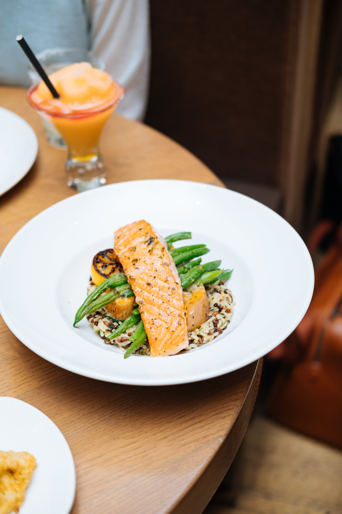
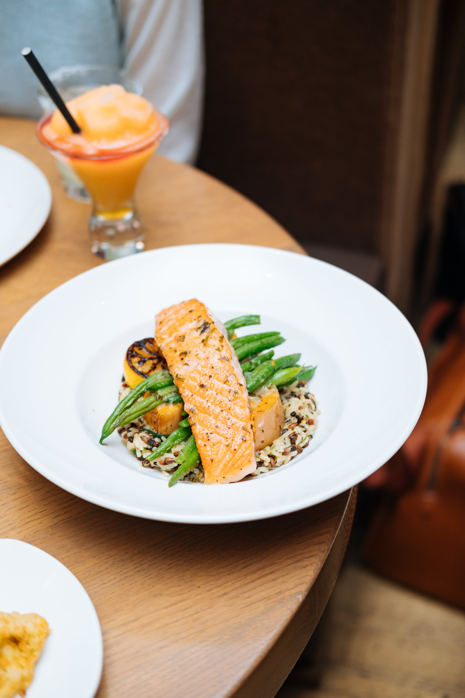

Welcome to Soul Kitchen
Founded in 2003 by Mr John Von Jobi.
Its name took inspiration from the quote "food for the soul".
We strive to provide healthy and authentic food for you.
Always.
 


... and more!
We serve different kinds of food!
 ZF
ZF